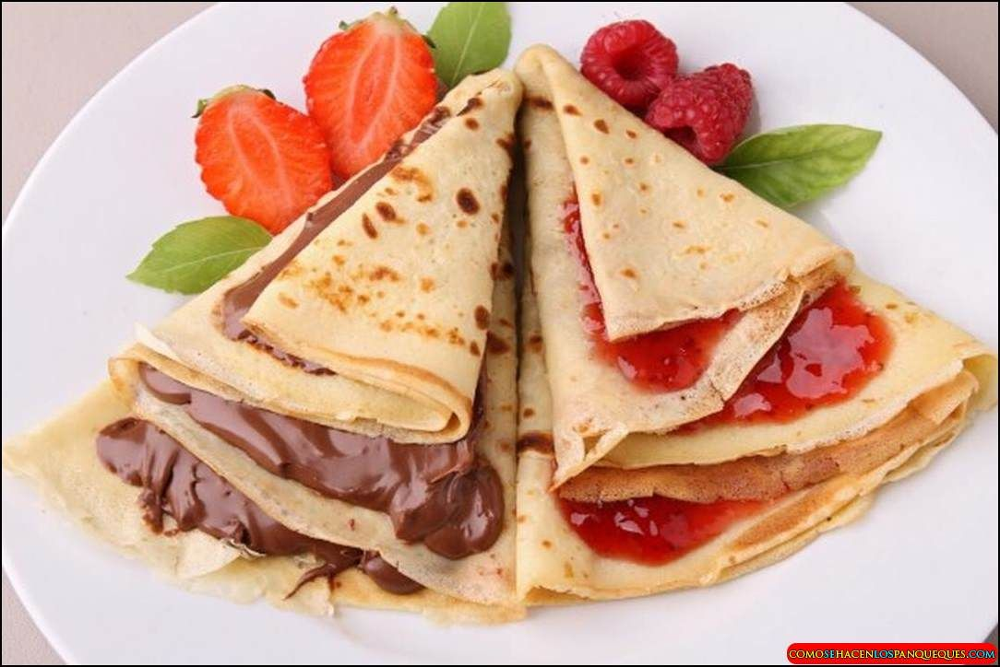
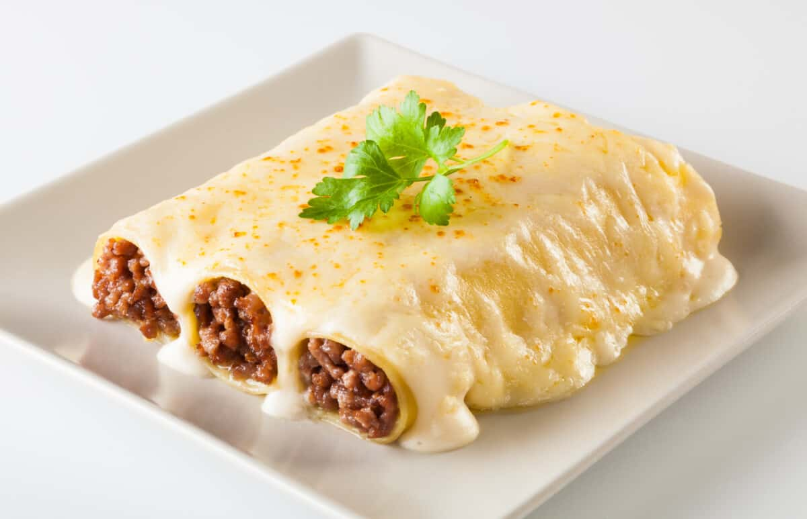
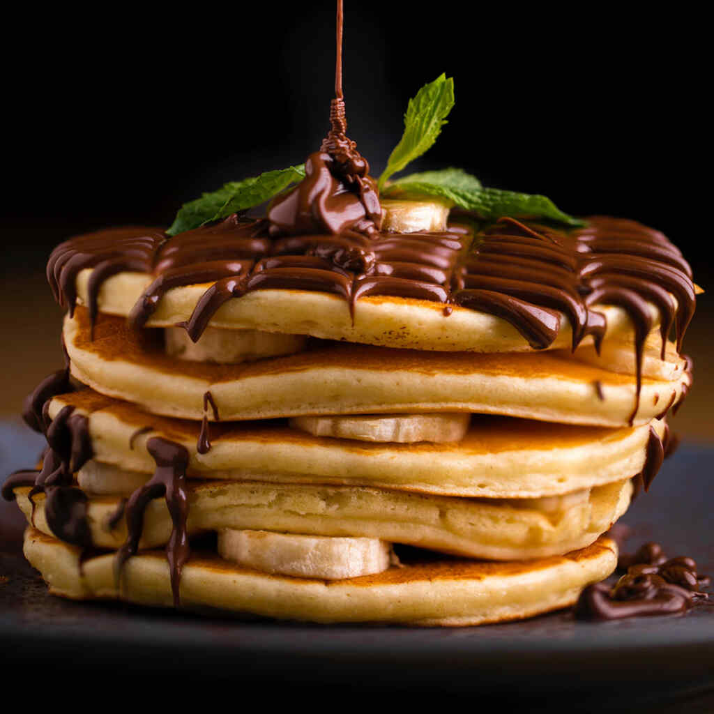
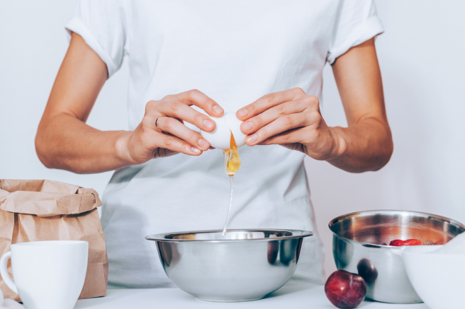
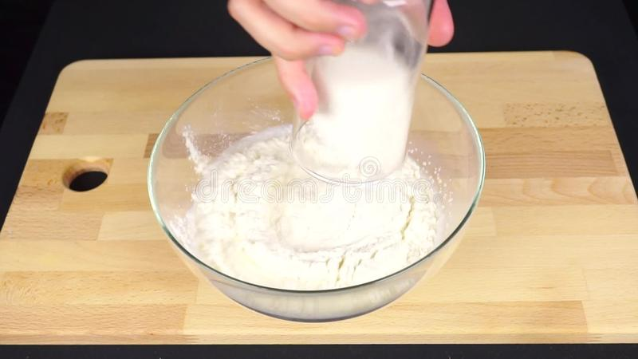
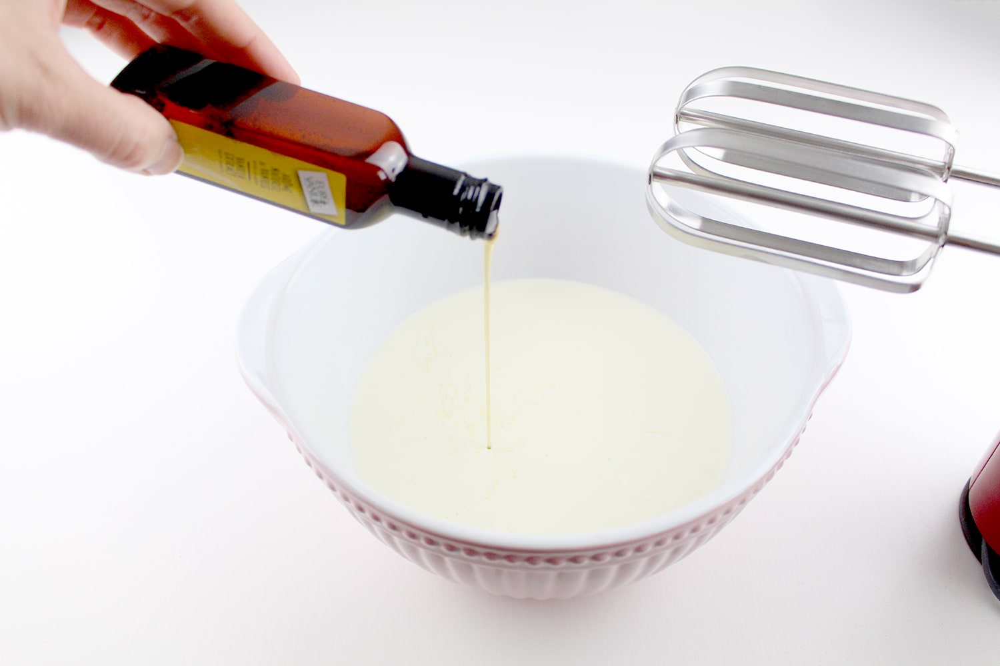
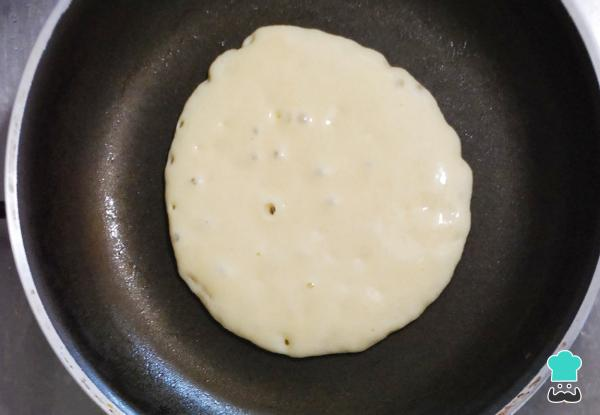

Estilos de panqueques
Panqueque con DDL y mermelada

Canelones

Chocoqueque

Panqueques con frutos del bosque

crepé con frutillas

paso 1
Colocar en un bol los huevos y mezclar con batidora eléctrica (o con batidor manual).

paso 2
Agregar 100 gramos de harina y mezclar nuevamente.

paso 3
Agergar esencia de vainilla y mezclar

paso 4
Poner en una sarten caliente la mezcla en pocas cantidades y dar vuelta cuando se cocine de un lado

paso 5
Disfrutar